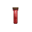
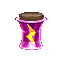

| To brew you must be standing on the boiling pot in the first area of Gdh near the captain. Brewing requires 3 flowers and a bottle. Recipes are at the bottom Brewing has taken the old streetwise spot in skills window. !! Use *train 0 18 50 to check your brewing skill! !! |
|||
| Ingredients | Effect | Obtained from | Picture |
The following Is the main ingredient required |
|||
| Acid potion | Main Ingredient required for brewing potions | Random drop from Green dragon hatheries monsters. * Purchasable in a shop in Gdh locker area |
 |
The following are the second ingredient that determines the type of potion brewed. |
|||
| Aconite | Strength | Random drop from Green dragon hatheries monsters. * Purchasable in a shop in Gdh locker area |
 |
| Anise hyssop |
Willpower | Random drop from Green dragon hatheries monsters. * Purchasable in a shop in Gdh locker area |
 |
| Artillil | Charisma | Random drop from Green dragon hatheries monsters. * Purchasable in a shop in Gdh locker area |
 |
| Alpine strawberry |
Wisdom | Random drop from Green dragon hatheries monsters. * Purchasable in a shop in Gdh locker area |
 |
| American cowslip |
Agility | Random drop from Green dragon hatheries monsters. * Purchasable in a shop in Gdh locker area |
 |
| Alecost | Intelligence | Random drop from Green dragon hatheries monsters. * Purchasable in a shop in Gdh locker area |
 |
| Angel's fishing rod | Constituion | Random drop from Green dragon hatheries monsters. * Purchasable in a shop in Gdh locker area |
 |
| Bearberry | Luck | Random drop from Green dragon hatheries monsters. * Purchasable in a shop in Gdh locker area |
 |
| Bee balm | Speed | Random drop from Green dragon hatheries monsters. * Purchasable in a shop in Gdh locker area |
 |
| Bedstraw | Attacks | Random drop from Green dragon hatheries monsters. * Purchasable in a shop in Gdh locker area |
 |
| Bible leaf | Energy points | Random drop from Green dragon hatheries monsters. * Purchasable in a shop in Gdh locker area |
 |
| Begger's button |
Hit points | Random drop from Green dragon hatheries monsters. * Purchasable in a shop in Gdh locker area |
 |
The following are the Third ingredient that determines the level of the brewed potion. |
|||
| Big yellow centaurea | For brewing Lesser level potions * +2 to the stat when brewing stat potions * +40 hp when brewing health potions * +20 ep when brewing energy point potions |
Random drop from Green dragon hatheries monsters. * Purchasable from SwampWitch * Purchasable from Gdh locker area |
 |
| Bigleaf gentian | For brewing Basic level potions * +4 to the stat when brewing stat potions * +80 hp when brewing health potions * +40 ep when brewing energy point potions |
Random drop from Green dragon hatheries monsters. * Purchasable from SwampWitch * Purchasable from Gdh locker area |
 |
| Bishop's flower | For brewing Simple level potions * +6 to the stat when brewing stat potions * +120 hp when brewing health potions * +60 ep when brewing energy point potions |
Random drop from Green dragon hatheries monsters. * Purchasable from SwampWitch * Purchasable from Gdh locker area |
 |
| Black cohosh | For brewing Minor level potions * +8 to the stat when brewing stat potions * +160 hp when brewing health potions * +80 ep when brewing energy point potions |
Random drop from Green dragon hatheries monsters. * Purchasable from SwampWitch |
 |
| Black snakeroot | For brewing Common level potions * +10 to the stat when brewing stat potions * +200 hp when brewing health potions * +100 ep when brewing energy point potions |
Random dropfrom Green dragon hatheries monsters. * Purchasable from SwampWitch |
 |
| Blazing Star | For brewing Greater level potions * +12 to the stat when brewing stat potions * +240 hp when brewing health potions * +120 ep when brewing energy point potions |
Random drop from Green dragon hatheries monsters. (Gdh2) |
 |
| Blessed Thistle | For brewing Advanced level potions * +14 to the stat when brewing stat potions * +280 hp when brewing health potions * +140 ep when brewing energy point potions |
Random drop fromGreen dragon hatheries monsters. (Gdh2) |
 |
| Blue Cardinal | For brewing Grand level potions * +16 to the stat when brewing stat potions * +320 hp when brewing health potions * +160 ep when brewing energy point potions |
Random drop from Green dragon hatheries monsters. (Gdh2) |
 |
| Blue Eryngo | For brewing Titanic level potions * +18 to the stat when brewing stat potions * +360 hp when brewing health potions * +180 ep when brewing energy point potions |
Random drop from Green dragon hatheries monsters. (Gdh2) |
 |
| Broadleaf Arrowhead | For brewing Primal level potions * +20 to the stat when brewing stat potions * +400 hp when brewing health potions * +200 ep when brewing energy point potions * Can be used to skill up to 18 brewing |
Random drop near betrayer in sdc2 as well as all over Invaders refuge | |
Recipes |
|||
| Ingredients | Potion / Item | ||
1x Acid potion 1x of the "Second ingredient" type flower (listed at top of page) 2x of the Big yellow centaurea's flowers |
Lesser level potion | ||
| 1x Acid potion 1x of the "Second ingredient" type flower (listed at top of page) 2x of the Bigleaf gentian's flowers |
Basic level potion | ||
| 1x Acid potion 1x of the "Second ingredient" type flower (listed at top of page) 2x of the Bishop's flowers |
Simple level potion | ||
| 1x Acid potion 1x of the "Second ingredient" type flower (listed at top of page) 2x of the Black cohosh's flowers  |
Minor level potion | ||
| 1x Acid potion 1x of the "Second ingredient" type flower (listed at top of page) 2x of the Black snakeroot's flowers |
Common level potion | ||
| 1x Acid potion 1x of the "Second ingredient" type flower (listed at top of page) 2x of the Blazing Star's flowers |
Greater level potion | ||
| 1x Acid potion 1x of the "Second ingredient" type flower (listed at top of page) 2x of the Blessed Thistle's flowers |
Advanced level potion | ||
| 1x Acid potion 1x of the "Second ingredient" type flower (listed at top of page) 2x of the Blue Cardinal's flowers |
Grand level potion | ||
| 1x Acid potion 1x of the "Second ingredient" type flower (listed at top of page) 2x of the Blue Eryngo's flowers |
Titanic level potion | ||
| 1x Acid potion 1x of the "Second ingredient" type flower (listed at top of page) 2x of the Broadleaf arrowheads's flowers |
Primal level potion | ||
| 1 blue gem from Mercenary Advisor 1 of each of the 8 "simple" level STAT potions ( Strength, Agility, Constitution, Wisdom, Intelligence, Willpower, Luck, Charisma )   |
Milky Gem |
||
| 1 Mole blood 1 Wool cloak 1 set of white prot ice boots 1 set of green prot fire boots (Not Firegiant boots)     |
Red robe |
||
| 1 bread (Found in gdh 2 only, can't put in sack) 5 Acid potions |
Pure water | ||
| 1 Green dragon blood 3 Acid potions (Requires skill 10 to not fail) |
Red vial | ||
| 1 Red vial Hand glaive (obtained by trading pure water) (Requires skill 11 to not fail) |
Improved hand glaive | ||
| 3 Green dragon tongues 1 Acid potion |
Blue/grey dragon tongue | ||
| 1 Blue/grey tongue 1 Basic gdh2 bow (obtained by trading pure water) |
Improved Gdh2 bow | ||
| 1 Smoked Bear Jerky 1 Pure Water 2 Acid potions (Requires skill 15 to not fail) |
Bear beer | ||
Invaders Refuge Brew Recipes |
|||
| Iron Bread Pie | 2x Iron Bread 1x Stans 1x Sparkling blue liquid (2oz) |
||
| Rapid Punch I (Minor) | 1x Very Cold Green Fluid  1x Blue Eryngo 1x Clary sage 1x Common Burdock |
||
| Rapid Punch II (Moderate) | 1x Cold Green Fluid 1x Blue Eryngo 1x Clary sage 1x Common Burdock |
||
| Rapid Punch III (Heavy) | 1x Room temperature Green Fluid 1x Blue Eryngo 1x Clary sage 1x Common Burdock |
||
| Rapid Punch IIII (Major) | 1x Warm Green Fluid 1x Blue Eryngo 1x Clary sage 1x Common Burdock |
||
--- |
|||
| Combat Replication I (Minor) | 1x Very Cold Green Fluid 1x Blue Eryngo 1x Clary sage 1x Cowslip |
||
| Combat Replication II (Moderate) | 1x Cold Green Fluid 1x Blue Eryngo 1x Clary sage 1x Cowslip |
||
| Combat Replication III (Heavy) | 1x Room temperature Green Fluid 1x Blue Eryngo 1x Clary sage 1x Cowslip |
||
| Combat Replication IIII (Major) | 1x Warm Green Fluid 1x Blue Eryngo 1x Clary sage 1x Cowslip |
||
--- |
|||
| Damage Inflation I (Minor) | 1x Very Cold Green Fluid 1x Blazing Star 1x Castor bean 1x Cleavers 1x Stans |
||
| Damage Inflation II (Moderate) | 1x Cold Green Fluid 1x Blazing Star 1x Castor bean 1x Cleavers 1x Stans |
||
| Damage Inflation III (Heavy) | 1x Room temperature Green Fluid 1x Blazing Star 1x Castor bean 1x Cleavers 1x Stans |
||
| Damage Inflation IIII (Major) | 1x Warm Green Fluid 1x Blazing Star 1x Castor bean 1x Cleavers 1x Stans |
||
--- |
|||
| Damage Deflation I (Minor) | 1x Very Cold Green Fluid 1x Castor-oil 1x Cockscomb 1x Blessed thistle 1x Stans |
||
| Damage Deflation II (Moderate) | 1x Cold Green Fluid 1x Castor-oil 1x Cockscomb 1x Blessed thistle 1x Stans |
||
| Damage Deflation III (Heavy) | 1x Room temperature Green Fluid 1x Castor-oil 1x Cockscomb 1x Blessed thistle 1x Stans |
||
| Damage Deflation IIII (Major) | 1x Warm Green Fluid 1x Castor-oil 1x Cockscomb 1x Blessed thistle 1x Stans |
||
--- |
|||
| Ice Ablation III | 1x Very Cold Green Fluid 1x Blue cardinal 1x Caucasian elemental 1x castor-oil 1x Cockscomb 1x Blessed thistle 1x Stans |
||
| Fire Ablation III | 1x Cold Green Fluid 1x Blue cardinal 1x Chinese wintergreen 1x castor-oil 1x Cockscomb 1x Blessed thistle 1x Stans |
||
| Energy Ablation III | 1x Room temperature Green Fluid 1x Blue cardinal 1x Clary Sage 1x castor-oil 1x Cockscomb 1x Blessed thistle 1x Stans |
||